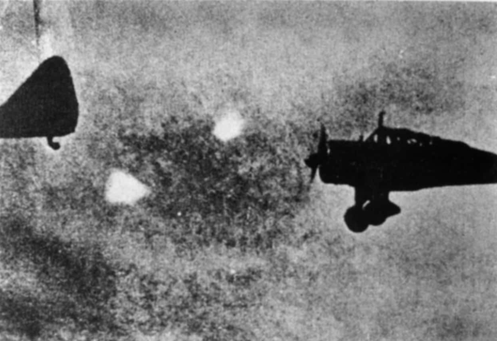
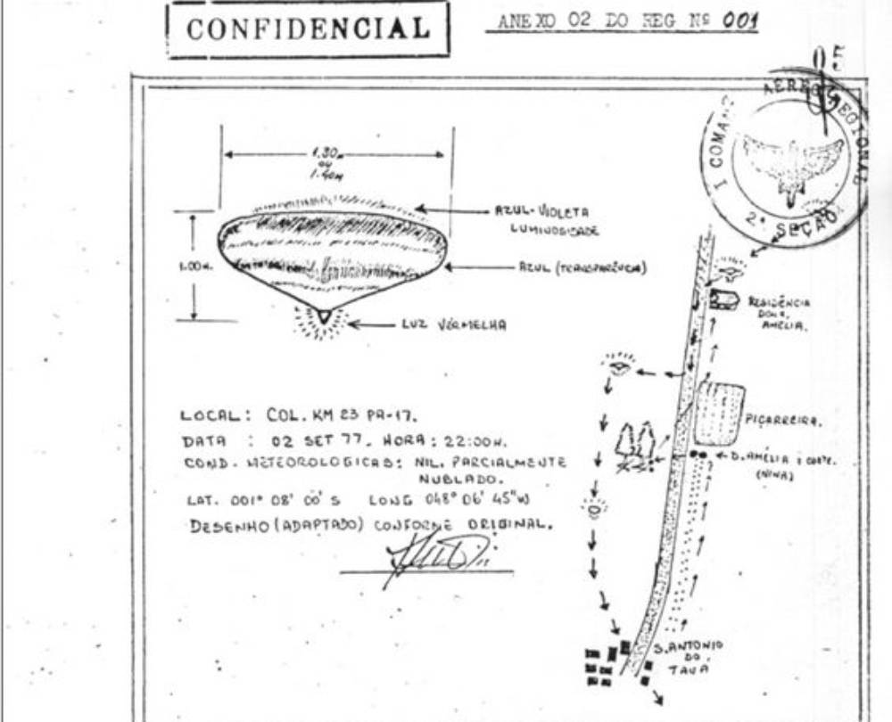
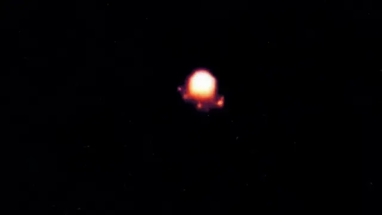

Casos Investigados
Incidente de varginha
Na madrugada do dia 20 de janeiro de 1996, a pacata cidade de Varginha, em Minas Gerais, entrou para a história como palco de um dos eventos ufológicos mais polêmicos e misteriosos do mundo. O que começou como um relato de três garotas assustadas logo se transformaria em uma das maiores teorias da conspiração do Brasil.

As jovens Liliane, Valquíria e Kátia afirmaram ter visto uma criatura com cerca de 1,60m, pele marrom, olhos vermelhos grandes, cabeça desproporcional e três protuberâncias na testa. O ser parecia debilitado e emitia sons estranhos. O local do avistamento? Um terreno baldio no bairro Jardim Andere. Elas correram, desesperadas. Mas o que viria depois seria ainda mais assustador. Nos dias seguintes, moradores começaram a notar uma movimentação anormal: militares do Exército e bombeiros cercaram áreas específicas da cidade, helicópteros sobrevoavam bairros residenciais, e caminhões militares entravam e saíam com frequência incomum. De acordo com testemunhas, ao menos duas criaturas não humanas foram capturadas — uma delas ainda viva.
Segundo teorias populares, os seres teriam sido levados para o Hospital Regional de Varginha, depois transportados para unidades militares em Campinas e, possivelmente, até para os Estados Unidos. O mais sinistro: relatos indicam que uma dessas criaturas morreu durante os procedimentos, e um policial militar, Marco Eli Chereze, que teve contato direto com ela, também faleceu dias depois por infecção generalizada — o que muitos acreditam ter sido causado por uma substância desconhecida. A versão oficial das Forças Armadas? Nada aconteceu. O Exército declarou que tudo não passou de um mal-entendido: o "ET" seria na verdade um morador com deficiência mental, sujo de lama, e a movimentação militar seria apenas treinamento de rotina. Mas para ufólogos e teóricos da conspiração, isso foi apenas o começo de um grande encobrimento orquestrado.

O caso é cercado de silêncios, contradições e documentos sumidos. Testemunhas que falaram abertamente à imprensa recuaram misteriosamente. Funcionários do hospital foram orientados a manter segredo. Muitos apontam que houve interferência de agências estrangeiras, como a CIA e o FBI, que teriam orientado o Exército brasileiro a manter tudo em sigilo. Desde então, o Caso Varginha virou símbolo da ufologia brasileira, rendendo livros, investigações independentes, conferências e até um documentário internacional de peso: "Moment of Contact" (2022), do cineasta James Fox, que trouxe novas entrevistas e supostos vazamentos que reforçam a ideia de que o governo brasileiro escondeu um contato extraterrestre real.
Mas afinal... Por que o Exército teria aparecido tão rápido? Como tantas testemunhas deram versões similares sem se conhecerem? O que realmente aconteceu com Marco Chereze? E por que, quase 30 anos depois, ainda não temos uma explicação clara?
Para muitos, o Caso Varginha é o nosso "Roswell brasileiro", com todos os ingredientes para um mistério de verdade: encobrimento militar, criaturas de outro mundo, mortes suspeitas e um silêncio que fala alto demais.
Afinal, se nada aconteceu... por que esconder tanto?
Saiba mais.Caso Roswell
Em 8 de julho de 1947, o jornal local Roswell Daily Record estampava na primeira página: “RAAF captura disco voador em rancho na região de Roswell.” A manchete causou alvoroço. No entanto, menos de 24 horas depois, a Força Aérea recuou: tratava-se, segundo eles, de um mero balão meteorológico.
Mas a sequência dos fatos levanta mais perguntas do que respostas

Testemunhas afirmam que os destroços recuperados por militares apresentavam propriedades incomuns — materiais metálicos que retornavam à forma original após serem dobrados, sem sinais de desgaste, calor ou ferrugem. Alguns relataram símbolos desconhecidos gravados nas peças, semelhantes a hieróglifos. Há também relatos não confirmados sobre a recuperação de corpos — seres de baixa estatura, pele acinzentada e crânios desproporcionais.
Documentos desclassificados nas décadas seguintes revelaram a existência do Projeto Mogul — uma operação secreta da Força Aérea que utilizava balões de alta altitude para monitoramento nuclear. O governo sustenta que foi isso que caiu em Roswell. No entanto, especialistas questionam: por que tanto sigilo? Por que isolar a área com tamanho rigor e ameaçar civis com silêncio absoluto?
A cada década, novas evidências, depoimentos e investigações reacendem o caso. Roswell se tornou o ponto zero da ufologia moderna — não apenas por causa da possível presença extraterrestre, mas pelo padrão de ocultação, desinformação e manipulação de informações que se seguiu. Afinal, o que de fato caiu no deserto do Novo México naquela noite de 1947?

Talvez nunca saibamos a verdade completa — ou talvez ela esteja oculta, cuidadosamente enterrada sob décadas de sigilo, desinformação e convenientes versões oficiais. O Caso Roswell não é apenas um mistério sobre algo que caiu do céu, mas sobre como as instituições reagem diante do desconhecido. Quando até os fatos são classificados, resta-nos apenas investigar nas entrelinhas. E a pergunta permanece no ar, inquieta como as luzes que muitos dizem ter visto: á que estamos realmente sozinhos... ou apenas sendo mantidos no escuro?
Saiba mais.
Foo Fighters
Durante a Segunda Guerra Mundial, entre 1944 e 1945, pilotos aliados começaram a relatar estranhos fenômenos nos céus da Europa e do Pacífico. Objetos luminosos, muitas vezes esféricos, coloridos e com manobras impossíveis para a tecnologia da época, surgiam durante os voos — às vezes acompanhando as aeronaves, outras cortando o céu em alta velocidade. Eram chamados de “Foo Fighters”, um termo derivado da gíria da época e de uma tira cômica popular chamada Smokey Stover. Inicialmente, os militares acreditaram que se tratava de uma nova arma secreta nazista — talvez drones primitivos ou aeronaves de reconhecimento ultrassecretas. Mas o mistério só crescia: os objetos não atacavam, não interferiam diretamente nas missões, e simplesmente desapareciam sem deixar rastros.

Os relatos eram tão numerosos e consistentes que, em 1945, a Força Aérea dos Estados Unidos criou grupos para investigar discretamente o fenômeno. Mas os documentos permanecem envoltos em sigilo até hoje. Curiosamente, o governo nazista também registrou avistamentos similares, alegando que pensavam se tratar de uma arma dos Aliados.
Apesar das tentativas de explicação — como ilusões óticas, reflexos de luz, ou descargas eletrostáticas na fuselagem (conhecidas como fogo de Santelmo) —, muitos relatos desafiam essas hipóteses. Pilotos veteranos afirmavam que os Foo Fighters pareciam inteligentemente controlados, mantendo formação e realizando curvas abruptas. Alguns ufólogos acreditam que os Foo Fighters foram uma das primeiras manifestações modernas de contato alienígena, ocorrendo em um momento crítico da história humana: a guerra. Eles poderiam ser sondas de observação, estudando os comportamentos humanos diante da destruição em massa. Outros, porém, sugerem que as luzes eram experimentos secretos que nunca vieram à tona oficialmente — protótipos de tecnologia baseada em magnetismo ou até mesmo tentativas iniciais de drones não tripulados.
Mais de 70 anos depois, os Foo Fighters permanecem um dos maiores enigmas dos céus da era moderna. Não foram armas. Não eram ilusões. E ninguém, até hoje, conseguiu explicar completamente o que os pilotos viram — ou o que aquelas luzes queriam.
A pergunta persiste: quem — ou o que — estava nos observando durante a guerra?
Saiba mais.Operação Prato
Em meados de 1977, a cidade de Colares, no interior do Pará, foi palco de um dos eventos mais enigmáticos da história militar brasileira — a Operação Prato. O que começou como uma onda de pânico popular logo se transformaria em uma investigação secreta conduzida pela Força Aérea Brasileira (FAB), envolvendo fenômenos aéreos não identificados, vítimas com queimaduras misteriosas e um comandante que levaria seus segredos para o túmulo. Tudo começou com relatos que surgiam de diversas comunidades ribeirinhas: luzes no céu que perseguiam moradores, invadiam casas e, em alguns casos, atacavam diretamente as vítimas com feixes de luz concentrados. Segundo os habitantes, esses feixes deixavam marcas no corpo semelhantes a queimaduras por radiação — vermelhidão, bolhas e dores intensas. Muitos dos afetados afirmavam sentir cansaço, anemia súbita e fraqueza nos dias seguintes aos ataques. O fenômeno foi batizado de “Chupa-Chupa”, por causa da crença local de que essas luzes estariam sugando o sangue ou a energia vital das pessoas.

A situação ficou tão crítica que diversas famílias abandonaram suas casas, e a prefeitura de Colares chegou a decretar estado de calamidade. Diante da pressão pública, a Força Aérea decidiu intervir, mas não anunciou a operação oficialmente. O nome dado à missão era “Operação Prato”, uma referência aos objetos voadores avistados, que muitas vezes lembravam pratos metálicos flutuando silenciosamente no céu.
A FAB enviou ao local um pequeno grupo de militares comandados pelo Capitão Uyrangê Hollanda, um oficial experiente e respeitado. A missão, segundo os registros liberados anos depois, era observar, registrar e tentar compreender o que estava acontecendo na região — mas tudo sob total sigilo. Durante cerca de quatro meses, a equipe colheu depoimentos, tirou centenas de fotografias e gravou dezenas de horas em vídeo. Os registros incluíam objetos voadores com formatos esféricos, ovais e até triangulares, realizando manobras que desafiavam as leis da física conhecidas. Segundo relatos internos, havia momentos em que os objetos pairavam silenciosamente sobre os militares, como se também os estivessem observando. Embora parte do material tenha sido tornado público anos depois, boa parte dos arquivos continua até hoje classificada como confidencial. E o que foi revelado já é, por si só, perturbador.

Após a aposentadoria, o próprio Capitão Hollanda concedeu uma entrevista histórica a ufólogos brasileiros em 1997. Nela, ele admitiu que os militares haviam testemunhado fenômenos inexplicáveis e que havia um esforço deliberado dentro da instituição para abafar o caso. Hollanda chegou a afirmar, com convicção, que “não se tratava de algo humano” e que havia uma inteligência por trás daquelas manifestações. Meses depois dessa entrevista, Hollanda foi encontrado morto em seu quarto. Oficialmente, o caso foi encerrado como suicídio, mas as circunstâncias levantaram dúvidas — especialmente considerando que o capitão havia voltado a demonstrar medo e paranoia nos dias que antecederam sua morte. Para muitos, ele sabia demais.
A Operação Prato permanece até hoje como um dos maiores mistérios da história militar brasileira. Com centenas de documentos ainda classificados e testemunhas que preferem o silêncio, ela representa não apenas um encontro com o desconhecido, mas também uma prova de que governos podem ocultar verdades muito maiores do que imaginamos. O que realmente aconteceu nos céus da Amazônia? Seria o “Chupa-Chupa” uma arma secreta de outra nação? Um experimento biológico? Ou seria, de fato, uma forma de vida desconhecida interagindo com uma população isolada? A verdade, como quase sempre acontece, permanece encoberta pelas sombras.
Saiba mais.Luzes de Phoenix
Na noite de 13 de março de 1997, milhares de pessoas em Phoenix, no estado do Arizona (EUA), testemunharam um dos eventos mais misteriosos da ufologia moderna. O que começou como uma noite comum rapidamente se transformou em um caso de proporções épicas, com relatos que se estendiam por mais de 480 quilômetros, desde a fronteira com Nevada até o sul do Arizona. O fenômeno ficou conhecido como “As Luzes de Phoenix”. Por volta das 19h55, as primeiras testemunhas avistaram uma formação de luzes intensas e silenciosas cruzando o céu em um padrão triangular. Algumas pessoas relataram que as luzes estavam ligadas a um enorme objeto sólido em forma de boomerangue, que bloqueava as estrelas à medida que passava lentamente. Aparentemente, o objeto era tão grande quanto um campo de futebol – ou até maior – e voava em baixa altitude, sem emitir qualquer som perceptível. Milhares de testemunhas, entre elas policiais, militares aposentados e até pilotos experientes, ligaram para linhas de emergência, emissoras de TV e bases aéreas em busca de respostas. Câmeras amadoras registraram as luzes, e as imagens rapidamente ganharam repercussão nacional. Um detalhe intrigante: nenhuma explicação oficial foi dada imediatamente. As autoridades mantinham silêncio, o que apenas aumentava o mistério.

Somente dias depois, a Força Aérea dos EUA declarou que as luzes eram resultado de sinalizadores militares lançados por caças durante exercícios na Base Aérea de Luke. No entanto, essa explicação foi recebida com ceticismo. Diversas testemunhas afirmaram que os sinalizadores não poderiam se mover em formação tão precisa, nem pairar silenciosamente sobre a cidade por tanto tempo. Além disso, os exercícios teriam ocorrido horas depois dos primeiros avistamentos – o que não explicava o fenômeno por completo. Em 2007, Fife Symington, governador do Arizona na época do incidente, confessou que também havia testemunhado o objeto naquela noite e que ele definitivamente “não era feito por mãos humanas”. Na época, ele chegou a fazer piada com a situação em uma coletiva, mas anos depois afirmou que só agiu assim por pressão política. Até hoje, o caso permanece sem uma explicação definitiva. Ufólogos e pesquisadores continuam analisando os vídeos e depoimentos. Muitos acreditam que o governo esconde informações cruciais sobre a noite de 13 de março, enquanto céticos continuam buscando explicações convencionais. O que é certo é que algo extraordinário aconteceu nos céus do Arizona naquela noite — e o mistério das Luzes de Phoenix ainda brilha como uma das maiores incógnitas da ufologia contemporânea.
Saiba mais.Envie seu Relato
Você já presenciou algo inexplicável? Uma luz estranha no céu, um encontro sobrenatural ou um evento que desafiou a lógica?
O Segredos do Oculto quer ouvir a sua história. Seu relato pode ajudar a conectar pistas, revelar padrões ou até mesmo alertar outras pessoas.
Compartilhe conosco sua experiência – de forma anônima ou identificada – e ajude a manter viva a busca pela verdade.
Para enviar seu relato, clique aqui.